Modulation & space at a glance
Chorus, flanger, phasers, rotary, panning, echo, reverb and stereo tools. Click a plug-in for its panel; each one has its manual PDF and a download.
| Plug-in | In the spirit of | Main features | Best for |
|---|---|---|---|
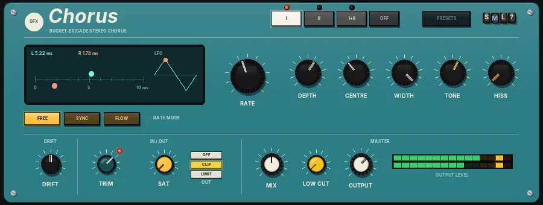 ChorusPanel | 80s poly-synth bucket-brigade chorus |
| Width and shimmer on synths and guitars |
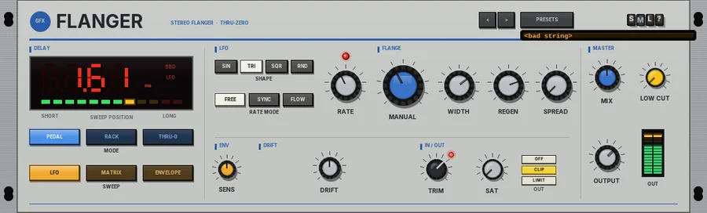 FlangerPanel | Pedal, studio-rack and tape flanging |
| Jet sweeps and through-zero flanging |
 PhaserPanel PhaserPanel | JFET, optical and tape phasing |
| Phasing from subtle to swirling |
 PolyvibePanel PolyvibePanel | Photocell vibe pedals |
| Psychedelic guitar swirl |
 RotaryPanel RotaryPanel | Two-rotor rotary speakers |
| Organs, and anything that wants to spin |
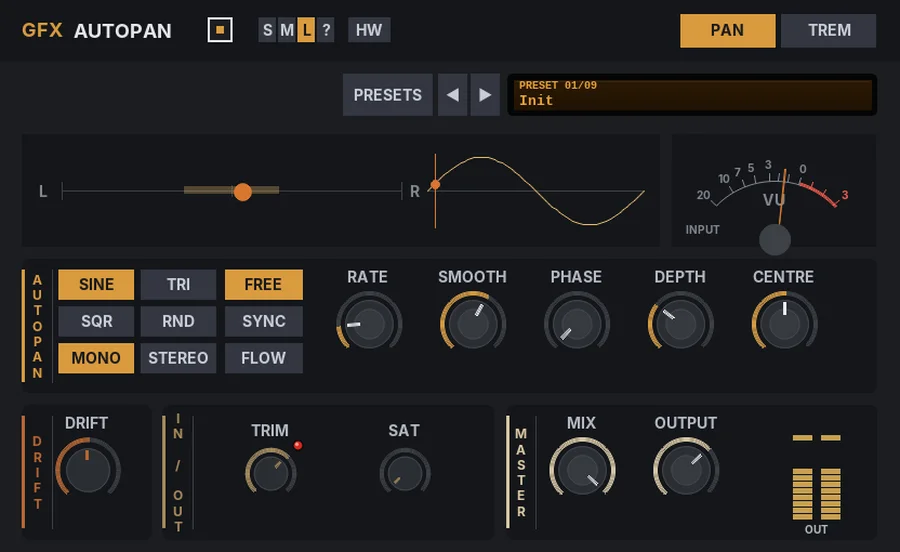 AutopanPanel | Auto-panners and tremolo units |
| Movement across the stereo field |
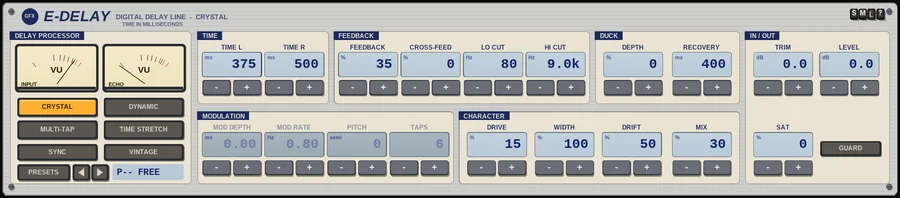 E-DelayPanel | European studio and broadcast delays of the 1980s |
| Clean echoes, vocals, rhythmic patterns |
 J-DelayPanel J-DelayPanel | Japanese digital delays of the 1980s |
| Guitars, synths, lo-fi and glitch |
 SpacePanel SpacePanel | Algorithmic reverbs and spring tanks |
| Ambience from tight rooms to washes |
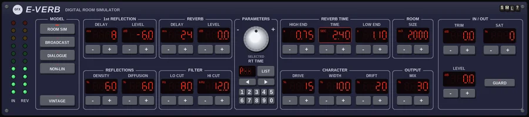 E-VerbPanel | European broadcast reverbs of the 1980s |
| Natural rooms, voice, drums |
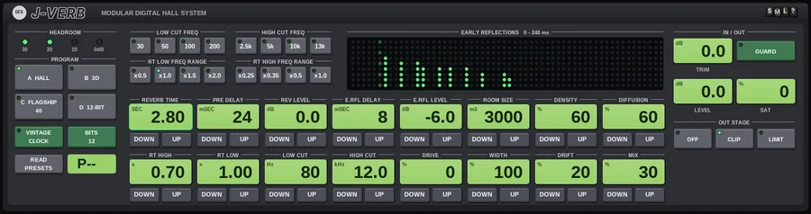 J-VerbPanel | Japanese studio and broadcast reverbs of the 1980s |
| Big halls, pads, 80s vocals |
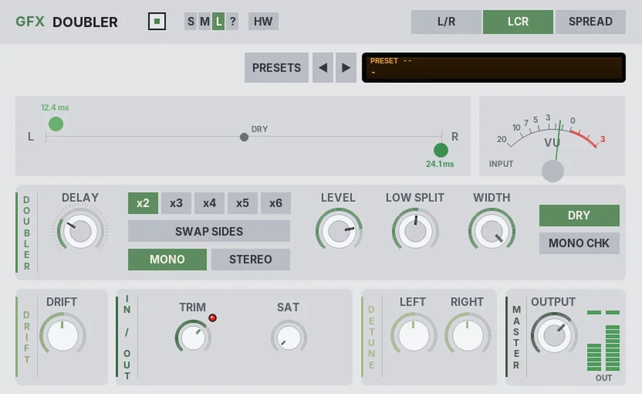 Haas DoublerPanel | Short-delay doublers |
| Widening and doubling |
 Mid/SidePanel Mid/SidePanel | Mid/side processors |
| Controlling the stereo image |
 Echo 34Panel Echo 34Panel | 80s kit-built bucket-brigade echoes |
| Dark, lo-fi analogue echoes |
 ADPModPanel ADPModPanel | Classic ring modulators |
| Metallic tones and wobble |
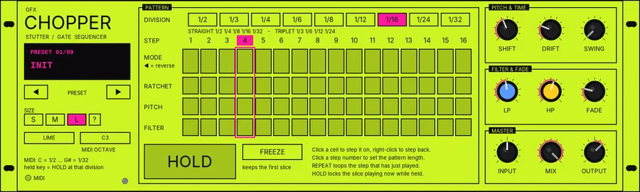 ChopperPanel | Stutter-house chops and trance gates |
| Turning vocals and pads into rhythmic hooks |
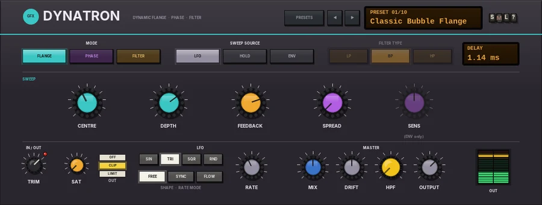 DynatronPanel | The two-tape-machine flanging trick |
| Bubbly jets and envelope wah |
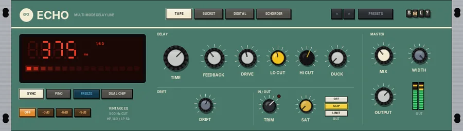 EchomaxPanel | Tape, bucket-brigade and digital echoes |
| Any echo in one box |
 EchofishPanel EchofishPanel | Envelope filters into tape and analogue echoes |
| Dub, funk and moving textures |
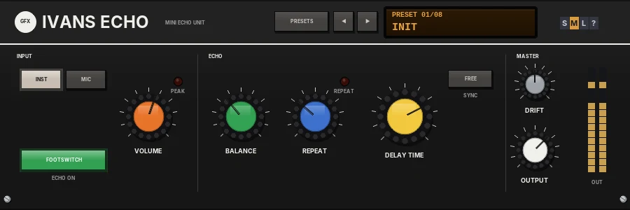 Ivans EchoPanel | Early-80s budget mini echo boxes |
| Slapback, metallic short echoes, lo-fi dub |
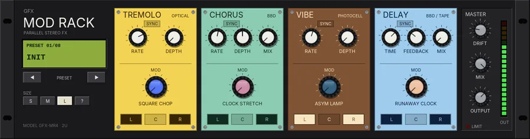 Mod RackPanel | Parallel pedalboard modulation |
| Stereo movement |
 OontechoPanel OontechoPanel | 2000s rhythmic gate multi-effects |
| Pads, vocals and trance gating |
 SquashballPanel SquashballPanel | Analogue delay pedals with a time-stretch switch |
| Guitar, synths and dub throws |